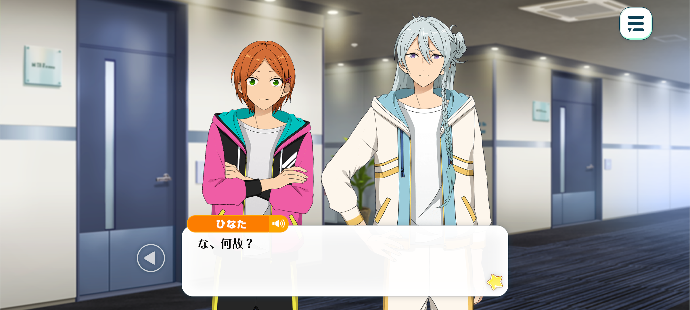
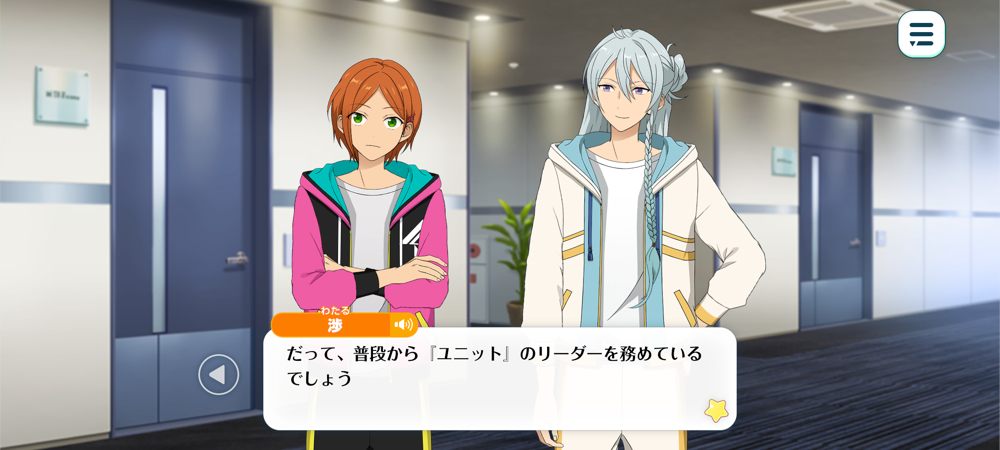
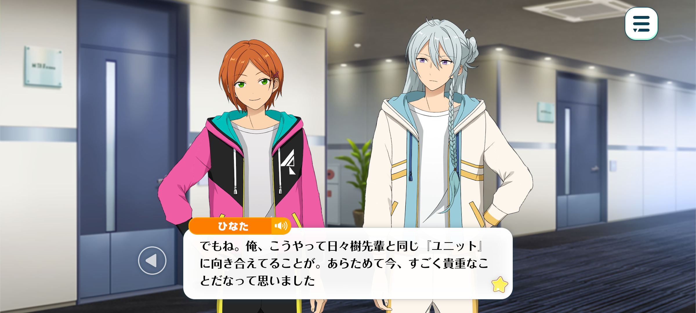
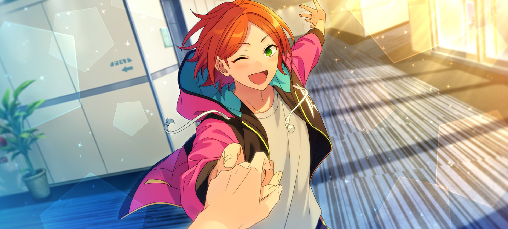

Easter To You
⌒Wonderful 1⌒



Wataru: —And why, may I ask, are you bringing this up now?
Hinata: W-why?
Well, the reason doesn’t really matter. It’s just… I’ve been a little worried about you Hibiki-senpai.
Wataru: Worried about me…?
Hinata: Um. Earlier, when you came into the Dance Room, before you suggested we take the day off, you sort of just stood there staring at us for a bit.
Maybe I’m just imagining things, but lately I’ve been keeping an eye on you so I can learn your techniques and put them into practice myself.
And yet, something felt different from usual. I couldn’t quite put my finger on it, but I got this gut feeling something was up…
I’ve been working hard to sharpen my observational skills, after all! I’d bet my life on them! I’m pretty confident in my abilities!
Only joking…?
Wataru: …
Hinata: …
Wataru: …My, what keen eyes you have. Are you quite done taking a peek under my mask?
Hinata: …Hibiki-senpai?
Wataru: I may be the oldest member of this unit, and everyone’s senior.
But we’re all members of the same unit. There’s no distinction between me and any of you.
That’s what I told everyone when we first met… And yet, before I knew it, I’d begun to devote myself entirely to the role of your senior.
Everyone looked up to me and listened so attentively to everything I said. No matter what I asked of you, you followed my lead with smiles on your faces—
…Fufu. It was quite a novel experience for me. Before I knew it, I’d found myself caught up in the role of “senior”, with no idea how I was supposed to act…
Hinata: No idea how to act?
U-umm. Does that mean you’ve been feeling anxious this whole time we’ve been together?
Wataru: Not exactly. I’ve only just begun to realise it myself. Perhaps I was so drunk with how much I care for all of you that it took me far too long to see things clearly.
Everyone’s smiling faces kept encouraging me to move forward, and before I knew it, I’d become the leader simply because I was the senior member.
But surely there’s someone better suited to leading a newly formed unit like ours.
Someone like you, Hinata-kun.

Hinata: Huh? Me…?
Wataru: After all, you’re used to taking the lead of your own unit.
Hiiro-kun is the leader of ALKALOID as well. But he’s still relatively new to the idol world, so you have more experience in that regard, Hinata-kun.
Hinata: You’re right, now that I think about it… but…
Wataru: You see? Sometimes the things closest to us are the hardest to see. We can talk about the event, plan everything out, and discuss the performance…
…somehow, we’ve skipped right over the question of what kind of unit we actually want to be, haven’t we?
Hinata: …I see. Yuuta-kun and I have been working together as a unit for so long, I never really stopped to think about how it all started.
But isn’t that something you usually figure out by talking things through and getting to know each other?
It’s not like we were strangers meeting for the first time. I was already good friends with everyone. Maybe that’s why, once we all came together, it just felt natural to think of ourselves as a unit…
Wataru: They say that harmony is a beautiful thing. And if this experience has brought you to such a realisation, then it has certainly been worthwhile. However…
Hinata: However?
Wataru: Earlier, you said that I was always doing things for everyone. But couldn’t the same be said of all of you? You’re always so willing to listen to me…
Perhaps you feel you can’t speak your mind or voice any grievances to me, because I’m your senior, or because I’ve put myself in a position where I’m leading you all…
Hinata: …Whaaat? Sorry, I’m just a little taken aback at what you’re saying…!
Do we really look unhappy to you? I mean, sure, you’ve probably noticed that we’re a little tired now and then.
But we’ve been learning all sorts of new skills and getting better at them. We can actually feel ourselves improving! We’re not dissatisfied at all. If everything, we’re incredibly grateful to you, senpai!
We’ve made it this far because we respect and admire you! We wanted to work with you, and we chose to follow your lead, precisely because you’re you, Hibiki-senpai.
It never occurred to me, not until just now, that all the expectations we’ve placed on you, or the way we’ve been calling out senpai, senpai...
…might have been making you feel confused or even uncomfortable, Hibiki-senpai.
Wataru: No… The uncertainty I’ve felt regarding my role is entirely my own doing. It comes down to my inexperience, my own shortcomings.
I wish I could have found a way to resolve things without letting you see me like this. But when you asked me, the words simply came pouring out.
Hinata: Yeah… I’m glad I trusted my instincts and decided to ask you about it all. Thank you for opening up to me.
I’m really sorry. Even though we’re all members of the same unit, I’ve let things get to a point where the distinction between senpai and kohai feels so pronounced.

Wataru: …
Hinata: But, hey! Getting to be a part of the same unit and work together like this has really made me realise just how precious this experience is.
I mean, if it weren’t for a big event like this shuffle unit project, we probably never would’ve had the chance to perform together.
And we might never get another opportunity to spend so much time together, get to know each other this well, or have such meaningful conversations.
That’s why I want to make the most of this opportunity. I want to make our shuffle unit and the Easter Fes a huge success!
So, what about you? Do you feel the same way, Hibiki-senpai? And if you don't... well, I'd really like you to start feeling that way now!
Wataru: Fufufu. The way you’re bowing your head and holding out your hand in that manner makes it look as though you’re proposing we start a serious relationship…☆
I should have taken your hand like this when I first received your invitation, instead of going through all that lengthy discussion.
Hinata: …! Your hands are so big, senpai…!
Waa~, I should savour this moment. It’s my first time holding your hands like this…
It’ll be a shame if we let go now, so why don't we head to the Prop Room like this? It'll be hard to carry everything with just one hand, so let's each take one side.
Wataru: My, that's quite a bold suggestion, isn't it? Anyone who sees us walking by will think we're awfully close.
Hinata: That's perfectly fine with me. We really are members of the same unit, after all, and we'll be standing on stage together as partners.

If we want to put on a truly spectacular performance and get everyone excited, then we need to be having fun ourselves first. We should be laughing and enjoying every moment of it, too!
So, why don't we get a little closer? Let's close the gap between us! From today on, let's celebrate this as the day we became good friends... ♪